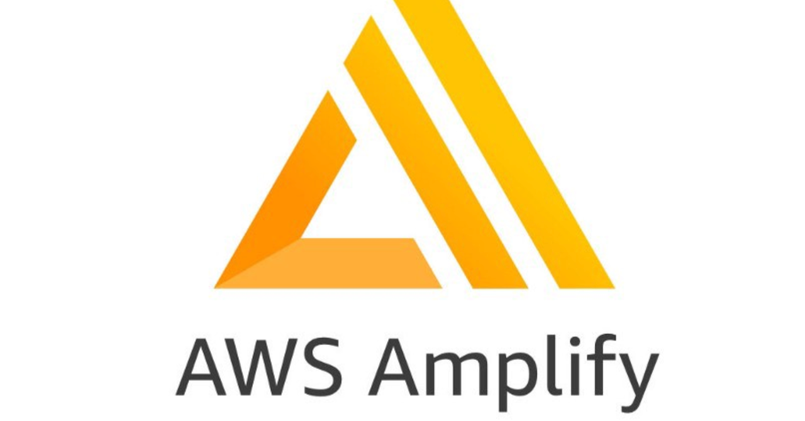
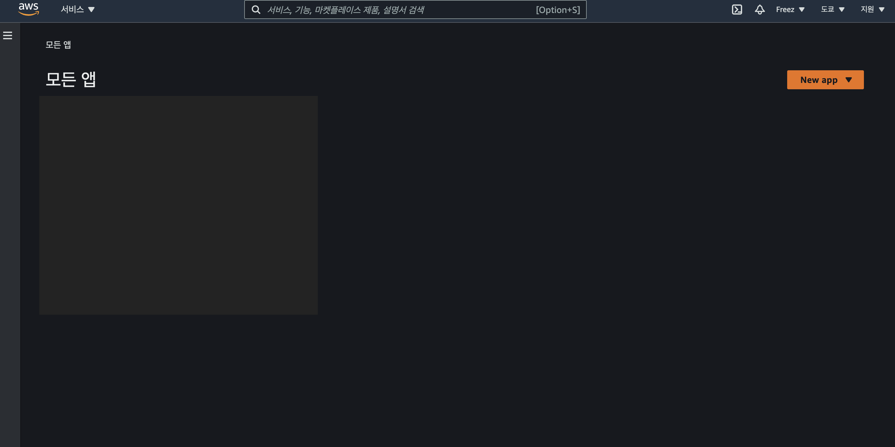
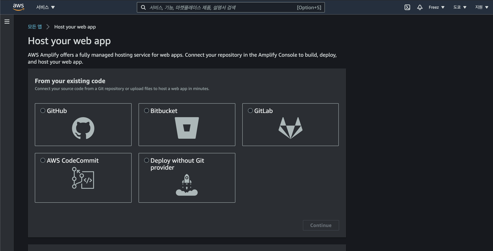
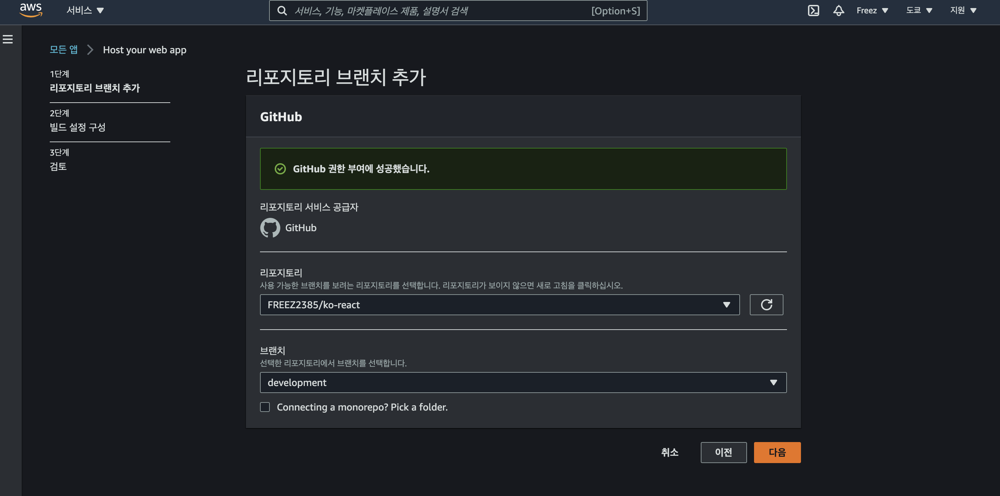
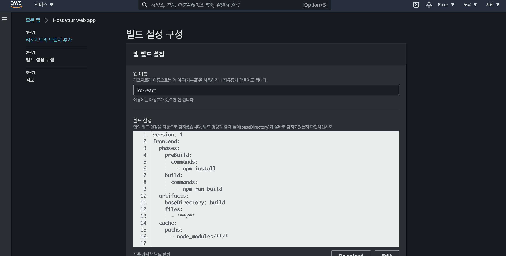
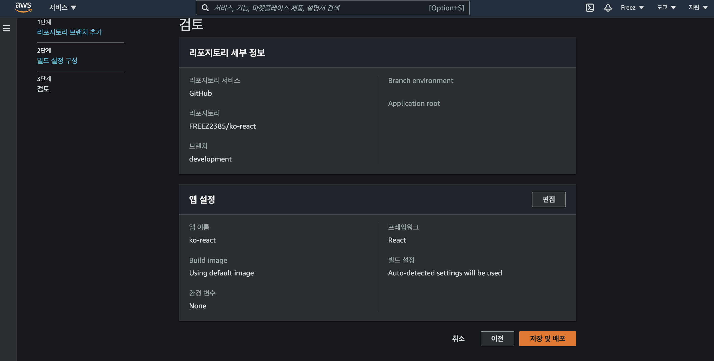
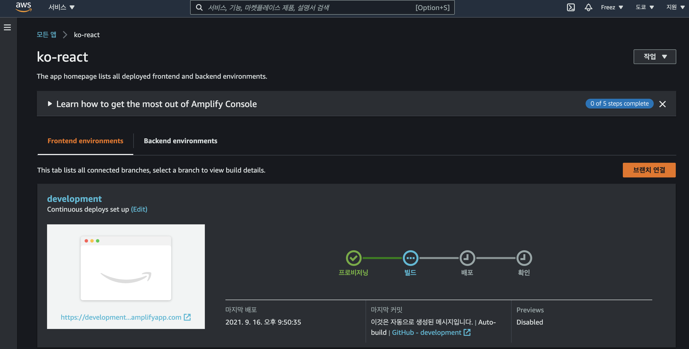

회사 내에서는 웹 어플리케이션을 만들고 사내 서버로 호스팅, 빌드까지 겸해서 담당을 한 적이 있다. 이때 당시에는 사내 PC서버에 Docker로 빌드해 운영하였지만 최근들어 AWS를 다루기 시작했다. 필자도 처음에는 AWS에 대해서 들어보고 구경만 했지만, 실제로 만져본 경험은 없었다. 그러다 사이드 프로젝트를 개발하던 중 서버를 개설하고 직접 운용까지 생각하고 있지만 무지막지한 서버 유지 비용때문에 개인으로 서버를 여는 것이 어렵게 되었다. 그렇기 때문에 AWS에 눈을 들이게 되었다.
처음 AWS에 계정을 가입하고 이것 저것 만지면서 실제로 AWS Amplify 를 통해 직접 웹 어플리케이션 호스팅, 빌드까지 전부 구축해주는 것을 확인할 수 있었다. 거기다 프론트엔드로 회사에서 거의 자주 사용하는 React에 대한 플랫폼 지원도 잘 해주었다. Github에 React 어플리케이션을 올린 후 AWS와 연동하면 자동으로 node환경을 만들어주고 테스트, 빌드, 배포까지 시켜주고 호스팅까지 해주는 만능형 도구를 볼 수 있었다.
그렇다면 실제로 AWS Amplify로 어떻게 구축하는지 간단하게 설명을 해보도록 하겠다.
AWS Amplify에 대하여

AWS Amplify는 실제로 웹 어플리케이션 뿐만 아닌 모바일 어플리케이션을 구축하기에도 편리한 AWS의 서비스중 하나이다. 프론트엔드, 백엔드를 버튼 몇번으로 구축을 쉽게 해주며 Github 혹은 git 워크플로우를 통해 브런치, 태그별 스테이징, 프로덕션으로 구분지어 호스팅을 만들어 편리하다.
AWS Amplify에 준비를 위한 환경
필자는 React 프로젝트를 통해 웹 어플리케이션을 구축해보기로 하였다. 우선 필요한 환경이라면 React 프로젝트를 넣은 github 리포지토리와 AWS 계정이 필요하다. AWS 계정은 Free Tier로도 제약없이 AWS Amplify를 다룰 수 있기 때문에 문제 없다. 다만 여기서 여러 어플리케이션을 구축하게 되면 Free Tier한도를 넘어서게 되므로 비용이 들 수가 있으니 주의하기 바란다.
AWS Amplify 이용 방법
AWS 계정으로 웹 콘솔로 들어가면 AWS Amplify로 들어가면 처음 이용하는 유저는 어플리케이션을 생성할 수 있게 된다.

여기서 우측의 주황색 버튼으로 New App을 들어가보자 여기서 우리는 웹을 호스팅을 하는 것이기 때문에 Host Web App을 선택한다.

호스트로 들어가면 동기화할 플랫폼을 선택할 수 있다. Github 혹은 Gitlab같이 git를 통해 이용할수 있거나 혹은 Deploy Without Git Provider를 통해 파일을 직접 업로드 할 수 있다.
필자는 Github를 주로 사용하기 때문에 Github를 선택하였다. 처음으로 Github를 선택하면 계정과 동기화해야하는 화면이 나온다. github와 동기화가 완료되면 계정내의 리포지토리가 전부 표시된다.

이렇게 React 프로젝트가 담긴 리포지토리가 표시된다면 선택하고 호스팅할 브런치를 선택할 수 있다. 프로덕션 혹은 스테이징 별로 호스팅하고 싶으면 우선 스테이징을 먼저 선택 후 호스팅 한 후에 개별로 프로덕션을 따로 빌드 가능하다.

리포지토리를 선택했다면 프로젝트 내 소스들을 인식해 자동으로 node의 빌드 환경으로 작성되었다. 프론트엔드 이외에 백엔드를 사용하면 그 밑에 새롭게 빌드 설정을 작성하거나 따로 테스트 혹은 빌드에 필요한 명령어가 필요하면 빌드 설정에 작성하면 된다.

이렇게 빌드 설정을 하면 최종적으로 어플리케이션을 확인 할 수 있고 밑에 저장 및 배포 를 누르면 완료된다.
AWS Amplify를 이용한 어플리케이션 관리

저장과 배포가 완료되면 이렇게 자동으로 프로비저닝부터 시작해 빌드, 테스트, 배포까지 처리해준다. 그리고 화면 및에 나오는 URL이 현재 배포된 호스팅 주소이다. 여기서 호스팅 주소를 바꾸고 싶으면 AWS Amplify가 아닌 AWS Route 53 이라는 곳에서 호스팅 주소를 구매하여 등록이 가능하다.
만약에 호스팅한 브런치에서 푸쉬가 발생되었다면 AWS Amplify에서 자동으로 반응하여 빌드까지 시켜준다. 그렇게 URL 호스팅만 하면 특별한 관리 없이 바로 배포할 수 있다.
마무리
지금까지 웹 어플리케이션 프로젝트만 작성하는 것만 생각하다 직접 서버 운영할 수 있는 AWS를 찾다보니 웹 어플리케이션 구축이 쉽게 되는 AWS amplify를 확인해보았다. 개인적으로도 너무 간편해서 보기 좋았으며 이 기능을 좀 더 운영해 가상 환경을 직접 만들어 kuberetes로 서버를 운영하는 것을 해보고 싶다. 이제 프론트엔드 이외에도 서버 관련하여도 이것 저것 공부해보고 싶다.
혹시 피드백 혹은 모르는 것이 있다면 댓글 부탁드립니다.